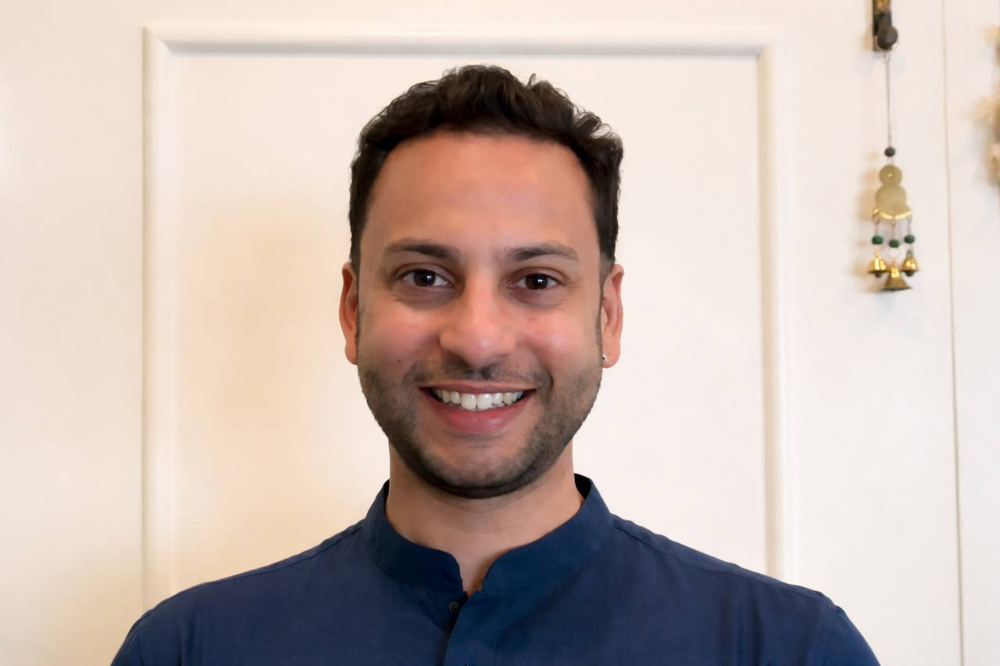

stay with one
It is something we become inside of.
We live inside systems that scale attention
but fragment meaning.
Something essential is missing.
I started noticing this
in the way people gather.
In the way we experience story.
In the way technology shapes attention —
but rarely connection.
what would it look like
to create something different?
A personal note —
My path has moved across different worlds —
but they never felt separate to me.
they felt like one question
seen from different angles.

Over time, something became clear
So I began designing environments
not as escape —
but as a way back into authorship.
where…
This work unfolds through
not as a company
but as a living ecosystem
where stories evolve through people
and culture becomes something we practice
I work with people who feel
not just to think about new possibilities —